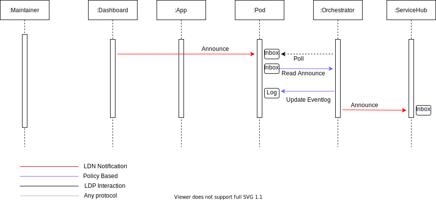
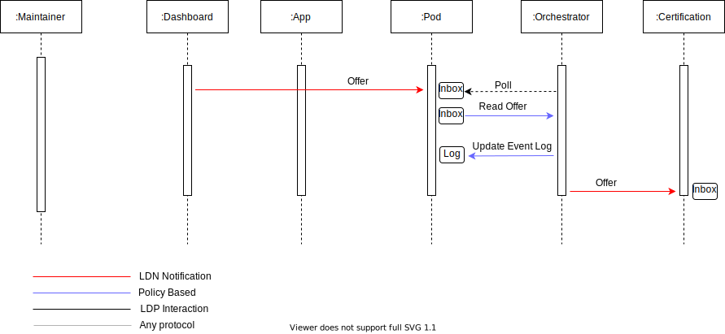

1. Mellon Orchestrator use cases
2. Glossary
Copied from Orchestrator for a decentralized Digital Heritage Network:
- Actor
-
A entity (person, application or service) that participates in the network.
- Human Agent
-
A person that operates directly as an Actor on the network.
- Autonomous Agent
-
An intelligent software instance that operates on an Actor's behalf but without any interference of that Actor.
- Maintainer
-
A Human Agent that can manually perform actions (see ) on the network using a Dashboard application.
Usually a person employed by an organisation (e.g., a Cultural Heritage Institution) to maintain data and datasets owned by that organisation.
- Data Pod
-
As defined by [solid-protocol], a Data Pod is a place for storing documents, with mechanisms for controlling who can access what.
- Inbox
-
An [LDP] resource where others can POST Linked Data Notifications [LDN] in order to notify the actor of a change an artefact’s lifecycle.
- Artefact Lifecycle Event Log
-
An HTTP resource served by an actor (e.g., as a resource in the Data Pod) that represents a log of lifecycle events that artefacts known by the actor were involved in..
Artefacts are considered known when they reside in the actor’s Data Pod or if the actor has been made aware via [LDN].
- Service Hub
-
An Actor that provides a service to other actors in the network. It is a Solid app and serves an Inbox.
- Policy
-
A set of machine-readable business rules that instruct the Orchestrator on what actions to take in response to a trigger such as incoming notifications, perceived changes in the data, or manual invocation by an Actor.
- Dashboard
-
A user application and Solid app that enables users to interact with the contents of the Data Pod, the Orchestrator, or other Actors in the Digital Heritage Network.
New added terminology:
- Artefact
-
An HTTP resource on a Data Pod that the subject of (Scholarly) Communication (e.g. a publication, a review, a nanopublication, a dataset)
- Orchestrator
-
An Orchestrator is an Autonomous Agent dedicated to an Actor that hosts a Data Pod with associated Inbox and Artefact Lifecycle Event Log. It interprets and executes business rules described in a Policy. The Orchestrator watches the Inbox for possible triggers, records the actions it takes to the to the Artefact Lifecycle Event Log, and communications with other Actors.
- App
-
An App is an Autonomous Agent dedicated to an Actor that hosts a Data Pod. The App can write to the Data Pod unsupervised by the Human Agent and is not limited to the Inbox or Artefact Lifecycle Event Log.
Need a better name for the App
3. Difference between the Dashboard, App and Orchestrator
In the following discussion three agents communicate with the Data Pod with different privileges: the Orchestrator, the Dashboard and the App. While in real applications these agents could overlap or might not be required at all (in some cases), in this document they are treated as separate entities to help the discussion. Some reasons why these Actors could be treated as separate entities:
-
privileges needed to access the Data Pod
-
requirements needed to receive direct feedback from a Human Agent
-
requirements needed to permanently be online
-
requirements needed to understand the Scholarly Communication Notification protocol and Policies
With this regard:
- App
-
The App is a headless Autonomous Agent that doesn’t need a Human Agent to execute write operations on the Data Pod. It is a trusted application for the Maintainer
that could in principle update any artifact on the Data Pod. This application could run as a background service on the computer of the maintainer and be online as long as the computer is connected to a network. - Dashboard
-
The Dashboard is an Agent that responds to feedback from an Human Agent. Typically this Dashboard runs in a browser can be in an online or offline modus when a browser is running on the computer of the maintainer with one of the browser tabs opened with the dashboard application.
- Orchestrator
-
The Orchestrator is an Autonomous Agent that can read the (Scholarly) Inbox of the Data Pod and append to the Artefact Lifecycle Event Log. Guided by policies expressed as business rules, the Orchestrator also communicates with the Scholar Community network using the Scholarly Communication Notification protocol implementing Policies.
The three Actors can be seen as a mini solar system with the Data Pod as the Sun. The App is a fully trusted agent that runs very near to the data pod (in level of trust). The Orchestrator has very limited access rights to the data pod. The main task of the Orchestrator is to update the event log and execute policies in order to talk the Scholarly Communication Notification protocol (read/send messages from/to the corrrect Service Hubs). The Dashboard sits in between, it has control over the Data Pod but might (always) need user input to update the pod. Communication between the App/DashBoard and the Orchestrator happens via the Data Pod’s Inbox.
The networks below demonstrates the CRUD privileges imagined for the different actors in this document. The first network demonstrates a typical Solid setup where the Dashboard is a single page application that has direct access to the Data Pod and the App is more a background process running in the same computer as the Maintainer.
CRUD operations in case the DashBoard is single-page application and the App a background taskAre the Rules and Inbox necesearily part of the Data Pod or can they exist as separate resources?
The second network demonstrates a more classic setup with a browser Dashboard controlled by a server App which uses a Data Pod as backend storage.
4. Communication between Data Pod and Scholarly Community network
A2 Notifications can be sent from the researcher environment to Service Hub environments. For instance, in case of a request to review an artefact that resides in the Data Pod, an appropriate notification can be sent to a review Service Hub. The Service Hub can respond, for example, accepting or rejecting the review request, and, in the latter case, to relay the result of the review.
The Orchestrator sends notifications in response to triggers that result from the execution of Policies - implemented as business rules - that are associated with the Data Pod. The Orchestrator receives notifications in response to the ones it sent. The Orchestrator records information contained in both outgoing and incoming notifications in the Artefact Lifecycle Event Log.
The AS2 notifications are regarded as a high-level approach to automatically coordinate the distributed
execution of the crucial functions of scholarly communication. The notifications merely ensure that the
respective functions are in effect executed as prescribed by Policies, but do not attempt to
automate the actual fullfilment of the function itself. For instance, when an Offer is sent to a Review Service
we don’t envision that message contains all the steps to fully automate the submission process.
It could contain enough metadata for simple workflows. In general out of band communication
could be needed to perform all required steps.
All AS2 notifications are send to all Actors in the network in the form of Linked Data Notifications.
In this use case document we use 5 types AS2 notifications in line with the COAR Notify project.
- Offer
-
The
Offernotification is used when one system offers one of its resources to an other system to conduct some activity. - Undo
-
The
Undonotification is used to retract an offer made in a previous notification. - Accept
-
The
Acceptnotification is a response to anOffermade in a previous notification. It indicates that the offer is accepted. - Reject
-
The
Rejectnotificaion is a response to anOffermade in a previous notification. It indicates that the offer is rejected. - Announce
-
The
Announcenotification is used to announce the outcome of an activity: typically to announce the availability of a new (scholarly) artefact.
5. Data Pod sends notifications to a Service Hub
Let’s provide two examples how AS2 notifications can be sent out of the researcher environment and generate some communication patterns out of these examples.
5.1. Maintainer Announces a (finished) artefact in the Data Pod

-
The Maintainer decides, after a lot of work, that one artefact on the Data Pod is ready enter the scholarly realm
-
The Maintainer uses the Dashboard to send an
AnnounceNotification to the (Scholarly) Inbox of the Data Pod -
The Orchestrator polls the (Scholarly) Inbox of the Data Pod and discovers the
Announcefrom the Maintainer-
We assume that the Orchestrator has capabilities to filter out all trusted notifications from the Inbox (validation, signatures, shape matching, etc etc)
-
-
The Orchestrator updates the Lifecycle Event Log
-
The Orchestrator has a list of Policies what to do when a new
Announceof a specific type arrives and sends one or more AS2 notifications to one or more Service Hubs accordingly
This all assumes that the ServiceHub service doesn’t send a 4** (for any reason, metadata, privileges, etc)
We need to determine what is required for an Orchestrator to be able to understand in which phase of an artefact lifecycle it is dealing with. Also we will need some kind of typology for an artefact type itself, eg paper, dataset, software, etc.
5.2. Maintainer Offers an artefact in the Data Pod to a Service Hub

-
The Maintainer decides to send one artefact to an Certificaton Service to request a review
Herbert: This would typically be triggered by a notification sent from the Orchestrator to the Inbox as a result of the execution of the Policy "once an artefact has entered the scholarly realm it should be certified". The Maintainer can then decide whether or not to request review and where. I think it would be good to add this to the pic as it nicely connects to the previous cases + illustrates policy
-
The Maintainer prepares in the Dashboard the required metadata and sends an
OfferNotification to the (Scholarly) Inbox of the Data Pod -
The Orchestrator polls the (Scholarly) Inbox of the Data Pod and discovers the
Offerfrom the Maintainer -
The Orchestrator updates the Lifecycle Event Log
-
The Orchestrator sends the
Offerto the Certification Service-
With
@idthe network location of the event loghttps://bob.pod.org/events/cb7b1aed
-
5.3. Possible Policies
Possible policies that can be available for these use cases (using a pseudo policy language).
<SHAPE>
<PROPERTIES>
when
<CONDITIONS>
Add only Announce and Accept notifications from the Maintainer to the Event Log
mellon:AppendScholarlyRecord
a EventResource
a AppendResource
when
a Notification
isFrom(Maintainer)
inSet(Announce,Accept)
isOfType(Article,Review,Dataset)
Forward every Announce from the Maintainer to the institutional Registation Service and Archiving Service
mellon:ForwardToCatalog
a Notification
rdfs:label "Register at my library catalog"
target:
id: http://my.institution.org
ldp:inbox: http://my.institution.org/inbox
type: System
when
a Notification
isFrom(Maintainer)
inSet(Announce)
mellon:ForwardToArchive
a Notification
rdfs:label "Add to our archive"
target:
id: http://dataforever.edu
ldp:inbox: http://dataforever.edu/submission/new/inbox
type: System
when
a Notification
isFrom(Maintainer)
inSet(Announce)
Forward a notification from a Maintainer with a cc (e.g. an Offer) to an external Service Hubs.
mellon:ForwardCC
a Notification
rdfs:label "Forward messages with a cc"
target:
id: @cc
when
a Notification
isFrom(Maintainer)
has(cc)
notEqual(cc,Maintainer)
5.4. Orchestrator side effects
Based on the Policies:
-
The Orchestrator polls the Inbox for new notifications -
The Orchestrator matches every new notificaton against the Policies
-
This will result in zero or more matched policy shapes
-
When the Shape matches an
mellon:EventLogRecordthen a new EventLog is created -
When the Shape matches an
mellon:ForwardMessagethen a new AS2 notification is sent.
-
6. Service Hub sends notifications to Data Pod
6.1. Service Hub Announces a new resource about an artefact in the Data Pod
6.1.1. Service Hub Announce is a response to a previous Offer
For example, a Maintainer request that a journal reviews on of the publications
that can be found on the Data Pod. In a previous step an Offer was sent to
to journal as Certification Service. In response to the offer the journal sends
an Announce to the (Scholarly) Inbox of the Data Pod.
-
The Orchestrator finds in the (Scholarly) Inbox of the Data Pod an
Announcenotification -
The
Announcecontains aninReplyToproperty to a previousOffer -
The Orchestrator validates the
Offeragainst the Event Log -
The Orchestrator updates the Lifecycle Event Log with the AS2 notification
Is this a verbatim copy of the AS2 notification or a processed version?
6.1.2. Service Hub Announce is standalone
For example, an overlay journal adds an article it found in an Data Pod, via the WebID
of the author, the journals sends an Announce notification to the (Scholarly) Inbox of the Data Pod.
-
The Orchestrator finds in the (Scholarly) Inbox of the Data Pod an
Announcenotification -
The
Announcedoens’t aninReplyToproperty to a previousOffer -
The Orchestrator ignores the notification but does not remove it from the Inbox because it pertains to the URI of a scholarly artefact in the Data Pod.
-
The Maintainer finds via the Dashboard the standalone
Announcein the (Scholarly) Inbox -
The Maintainer sends an
Acceptwith aninReplyToto theAnnounceto the (Scholarly) Inbox -
The Orchestrator finds both the old
Announcenotification and newAcceptnotification -
The Orchestrator has a Policy that when both notifications match, they can be written to the Lifecycle Event Log